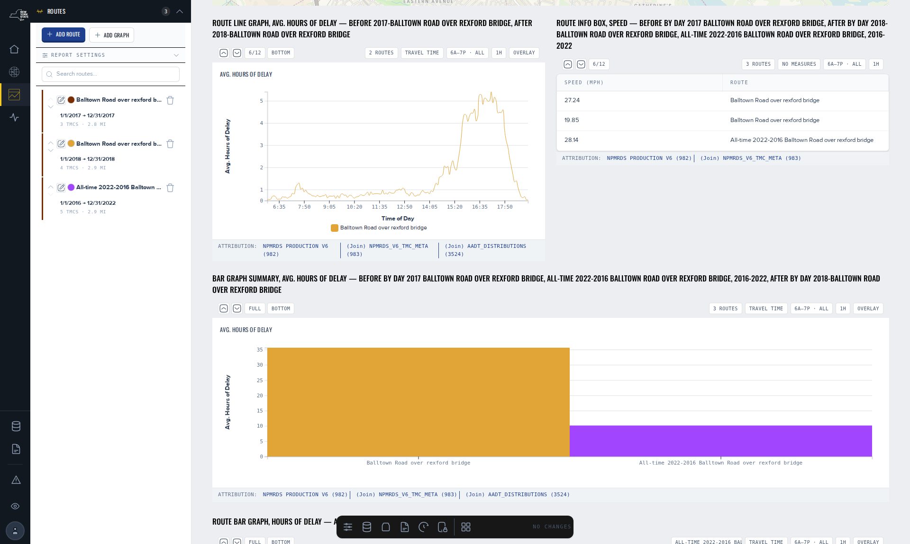
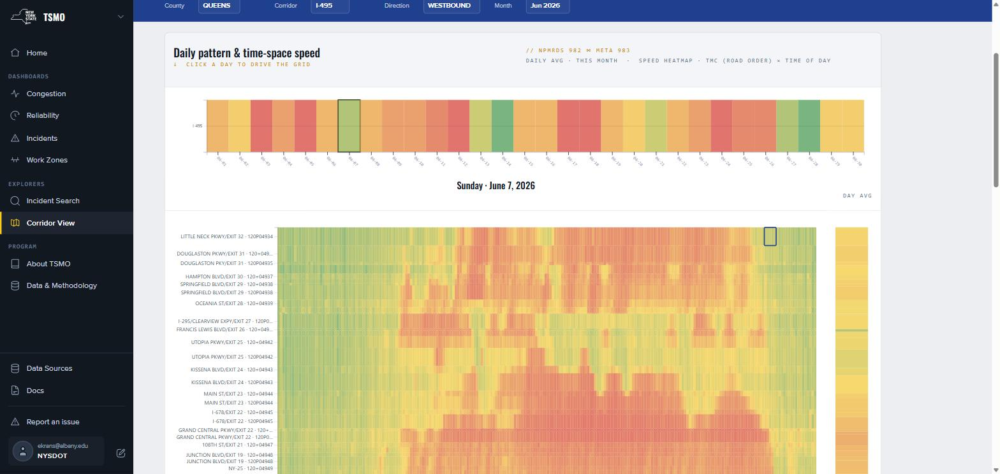
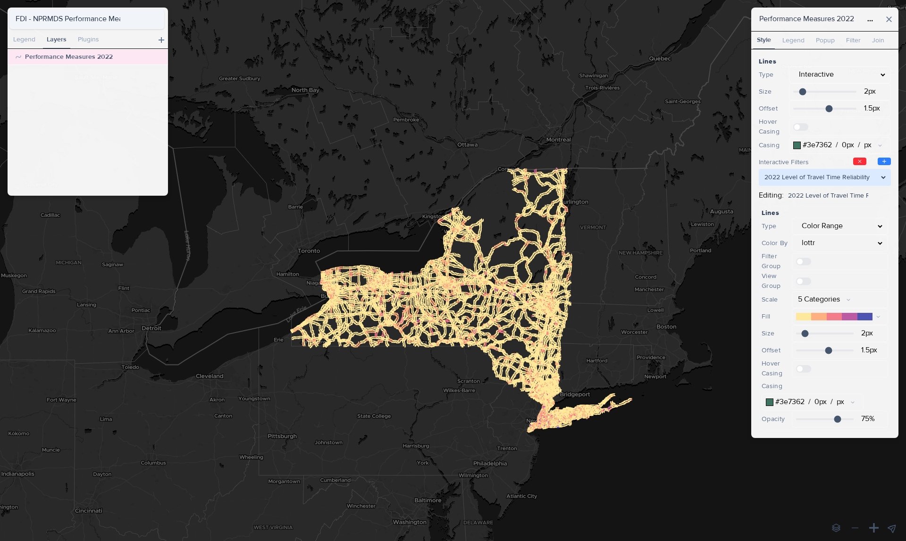
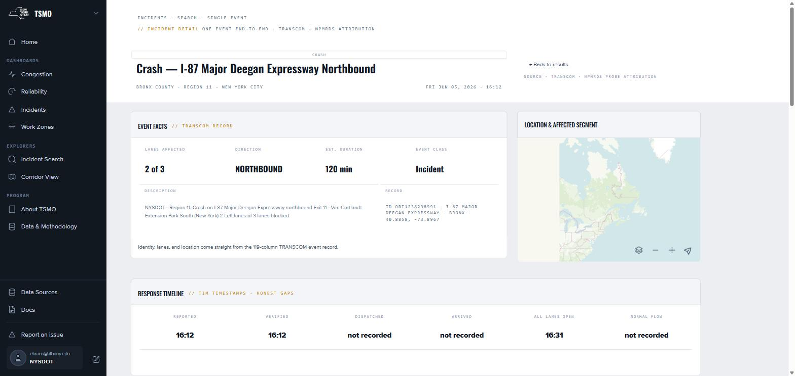

Research, Development and Support
of an Integrated Planning and
Performance Data and Analytics
Framework (PPDAF)
Final Report covering the period 26 June 2021 through 30 September 2026. This report documents the platform and data products delivered under this task assignment, the research findings that emerged from building and operating them, the status of each contract task, and AVAIL’s recommendations for the successor assignment.
New York State Department of Transportation
Office of Policy, Planning & Performance
50 Wolf Road, Albany, NY 12232
Catherine T. Lawson, Ph.D., Principal Investigator
Albany Visualization and Informatics Lab (AVAIL)
Lewis Mumford Center, University at Albany, SUNY
1400 Washington Avenue, Albany, NY 12222
The Research Foundation for SUNY, subconsultant to
Rutgers, The State University of New Jersey
Center for Advanced Infrastructure & Transportation
Region 2 UTC Consortium

TransportNY NPMRDS Macro View — statewide Level of Travel Time Reliability, CY 2025.
This report was funded in part through grant(s) from the Federal Highway Administration, United States Department of Transportation, under the State Planning and Research Program, Section 505 of Title 23, U.S. Code. The contents of this report do not necessarily reflect the official views or policy of the United States Department of Transportation, the Federal Highway Administration or the New York State Department of Transportation. This report does not constitute a standard, specification, regulation, product endorsement, or an endorsement of manufacturers.
Technical Report Documentation Page
| 1. Report No. SR-21-07 · to be confirmed |
2. Government Accession No. — |
3. Recipient’s Catalog No. — |
| 4. Title and Subtitle Research, Development and Support of an Integrated Planning and Performance Data and Analytics Framework (PPDAF) |
5. Report Date September 2026 6. Performing Organization Code — |
|
| 7. Author(s) Catherine T. Lawson, Ph.D. (Principal Investigator); Alex Muro; Eric Krans; Adam Tobey; Patrick Szary, Ph.D. (Co-Principal Investigator, Rutgers CAIT) |
8. Performing Organization Report No. — |
|
| 9. Performing Organization Name and Address Albany Visualization and Informatics Lab (AVAIL), Lewis Mumford Center, University at Albany, SUNY, 1400 Washington Avenue, Albany, NY 12222 via The Research Foundation for SUNY, subconsultant to Rutgers CAIT |
10. Work Unit No. (TRAIS) — 11. Contract or Grant No. C000799 · TA SP-20-03 |
|
| 12. Sponsoring Agency Name and Address New York State Department of Transportation, Office of Policy, Planning & Performance, 50 Wolf Road, Albany, NY 12232 |
13. Type of Report and Period Covered Final Report · 26 June 2021 – 30 September 2026 14. Sponsoring Agency Code — |
|
| 15. Supplementary Notes Project funded in part with funds from the Federal Highway Administration. This report extends the prior-phase final report, NPMRDS Final Report, 31 December 2021, which covered the 2013–2021 development of the NPMRDS Analytics Platform. |
||
| 16. Abstract Between 2021 and 2026, NYSDOT and the University at Albany’s Albany Visualization and Informatics Lab (AVAIL) extended a single-purpose NPMRDS reporting tool into TransportNY, a statewide open-source planning and performance data platform that carries three public products — NPMRDS, TSMO and the Freight Atlas — over a single authenticated data layer, a single map-authoring environment, and a single documentation set. The platform holds 14.5 billion five-minute probe travel-time records from January 2017 forward, 3.7 million TRANSCOM events, and the datasets behind the 2024 New York State Freight Plan, and it produces NYSDOT’s federal MAP-21 PM3 and HPMS submittals annually. The research findings of this assignment concern measurement. AVAIL determined that 88.1 % of the probe records underlying the federal reliability measures are built from four observed vehicles or fewer, and that thin observation systematically inflates apparent unreliability: a segment with 50–249 observations is 3.4 times more likely to be reported unreliable than one with 2,000 or more. The platform’s excessive-delay series was rebuilt in June 2026 on a corrected threshold, a median baseline and a capped attribution, and the value of time was replaced with a class-weighted rate approximately 2.5 times the flat rate it superseded. In August 2026 the analytical series was separated from the frozen federal computation so that definitions can continue to improve without disturbing compliance figures. This report documents the products delivered, the findings, the status of each contract task, the scope challenges encountered, and a phased recommendation for the successor Integrated Planning and Performance Data and Analytics Framework (IPPDAF) assignment. | ||
| 17. Key Words NPMRDS; probe data; travel-time reliability; MAP-21; PM3; HPMS; LOTTR; TTTR; PHED; TED; TSMO; incident delay; work zones; freight planning; TRANSEARCH; network conflation; OpenStreetMap; open-source platform; data governance; API |
18. Distribution Statement No restrictions. This document is available to the public. |
|
| 19. Security Classif. (of this report) Unclassified |
20. Security Classif. (of this page) Unclassified |
21. No. of Pages — 22. Price — |
About this Document
This Final Report is prepared in fulfillment of Task 7 of Task Assignment SP-20-03 and follows the organization required by Attachment A of that task assignment. It is organized in eight sections and five appendices. Section 1 introduces the problem, the prior phase of this research, and the NYSDOT practices this work supports. Section 2 describes the methods used to conduct the research, both technical and programmatic. Section 3 documents the products delivered. Section 4 presents the findings. Section 5 provides a task-by-task accounting of the assignment, the identified needs that remain open, and the scope challenges encountered. Section 6 describes the direction of the successor assignment and AVAIL’s recommendations for sequencing it. Sections 7 and 8 provide the conclusions and the statement on implementation.
Two conventions are worth noting at the outset. First, every figure reproduced in this report is a capture of the running application; no screenshot has been mocked up, and each caption states the application state and the capture date so that the figure can be reproduced or found to be out of date. Second, every quantity reported here names the basis on which it was computed — the geography, the period, the vehicle class and the data revision — because, as Section 4 describes, several of the platform’s figures were revised during the course of this assignment and figures computed before and after those revisions are not comparable.
Table of Contents
From a Reporting Tool to a Statewide Planning and Performance Platform
With the Federal Highway Administration’s release of the National Performance Management Research Data Set (NPMRDS) in 2013, NYSDOT engaged the Research Foundation for SUNY, on behalf of the University at Albany’s Albany Visualization and Informatics Lab (AVAIL), to support the efficient and effective analysis of this extensive database of archived travel times by road segment. By 2021 that partnership had produced a working web-based platform for congestion and reliability reporting. This task assignment asked a larger question: whether that single tool could be extended to serve as the state’s shared planning and performance data platform.
It could. TransportNY now carries three public products over a single sign-in, a single data layer, a single map-authoring environment and a single documentation set. NPMRDS answers how fast, how reliable and how congested a road is. TSMO answers how a region’s congestion, reliability, incidents and work zones performed over a year. The Freight Atlas is the interactive companion to the 2024 New York State Freight Plan. NYSDOT files its federal MAP-21 PM3 and HPMS submittals from the platform, and the state’s metropolitan planning organizations utilize it in developing their transportation improvement programs and their congestion management processes.
The more consequential result of the assignment is what building and operating the platform revealed about the data underneath it. Reliability and delay measures that the federal rule treats as settled proved, on New York’s network, to be sensitive to conditions the rule does not address: how many vehicles were actually observed on a segment, how long the segment is, which year’s network map the measure was computed on, and how old the traffic count paired with it is. A substantial portion of the technical work of the last two years consisted of measuring those sensitivities, correcting what could be corrected, and publishing what could not be corrected as a stated limitation rather than a silent one.
Project status. All seven contract tasks are delivered or in final review. The three products completed design review, AVAIL quality assurance and NYSDOT acceptance review and moved to production between August and September 2026. A 95-page documentation set is written and awaiting NYSDOT’s review. The CY 2025 federal submittal was accepted in June 2026. Section 5.3 enumerates the needs that remain open, and Section 5.4 documents the scope challenges encountered over the five years of the assignment.
Direction. The successor scope broadens PPDAF into an Integrated framework, IPPDAF, adding land use and commuting, transit and modal accessibility, health, air quality and greenhouse-gas impacts, weather and resiliency, and engineering-grade speed and volume estimates. It also invites other NYSDOT research partners to build inside the same authentication and data ecosystem rather than beside it. AVAIL’s recommended sequencing for that work is provided in Section 6.5.
| Task assignment | SP-20-03 |
| Notice to proceed | 26 Jun 2021 |
| Original end date | 30 Sep 2023 |
| Extended end date | 30 Sep 2026 |
| Original budget | $906,500 |
| Extended budget | $1,693,500 |
The September 2023 extension also retitled the assignment, from Technical Support for Use of the National Performance Management Research Data Set to Research, Development and Support of an Integrated Planning and Performance Data and Analytics Framework. The title change is the clearest single statement of what the project became.
Products Delivered
Three products serving three audiences, supported by four pieces of shared infrastructure that allow NYSDOT staff, rather than software developers, to add data, author maps and publish pages.
Speed, travel time and reliability for any segment or route over any period. Four tools: Reports, which charts one route over time from twelve templates; the Macro View, which shows one measure for one year across every segment; Route Comparison; and the MAP-21 PM3 pages that carry the federal figures.
869 legacy reports · 32 rebuilt
federal submittal source of record
Operations dashboards covering a year, statewide or by NYSDOT region: Congestion, Reliability, Incidents and Work Zones. Two explorers accompany them — Incident Search, which reaches every TRANSCOM event, and Corridor View, which replays one corridor through one day as a time-space speed grid.
11 NYSDOT regions
3.7M events since 2014
The 2024 State Freight Plan presented as a live map: 39 layers in 8 categories, a gallery presenting the plan’s own figures as ready-made views, a download catalog behind every layer, and the plan’s goals and strategies. It serves the public as well as planners.
22 of 33 plan maps live
4 export formats per dataset
A single catalog for every dataset the platform serves, providing versions, column metadata, per-dataset permissions and generated downloads. It replaced three separate catalogs.
Point a layer at a dataset version, style it, write its legend and save it. Every Freight Atlas layer is authored here by NYSDOT or AVAIL staff rather than written in code.
Users, groups and access levels across all products, together with a public status page and an issue tracker fed by a bug-report form available on every page.
The same read API the dashboards render from, available to consultants and agency developers, with a per-dataset export route in CSV, GeoJSON, Shapefile and GeoPackage.
Principal Findings
Six findings that changed how the platform computes or presents a figure. Each is treated at length in Section 4.
NPMRDS labels every record by the number of probes it averaged. Across 1.70 billion New York records for CY 2025, only 3.1 % reached the top band of ten or more. The federal reliability measures are computed on this sample.
AM-peak LOTTR crosses the federal 1.50 threshold on 38.2 % of segments with 50–249 observations, and on 11.1 % of those with 2,000 or more. Same network, same year.
The flat $20 per vehicle-hour was replaced in June 2026 with a class-weighted rate — $52 passenger, $42 single-unit truck, $77 combination truck — applied from each segment’s own traffic mix. The network blend is $50–55.
On the rebuilt CY 2025 series: 310.86M vehicle-hours of excessive delay statewide, 157.07M of it attributed to events — 46.84M to construction and 4.82M to accidents.
Measured across all 3.7 million TRANSCOM events: all lanes reopened is present on 42.7 %, incident verified on 20.1 %, and response on scene on 0.3 %. Incident-management performance cannot presently be measured from this feed.
The segment map is reissued annually and the data retroactively re-referenced. Segments grew from approximately 36,000 in 2017 to 52,473 in 2026. A route built on one year’s map can gain or lose segments on another.
Task Status
| Task | Status |
|---|---|
| 1 Quarterly reporting | Delivered, every quarter |
| 2 Dataset and application integration | Delivered |
| 3 Customization of analysis features | Delivered |
| 4 Partner coordination | Delivered, ongoing |
| 5 Quick-turnaround visualization | Delivered on request |
| 6 User resources and documentation | Written; NYSDOT review open |
| 7 Final report and summary | This document |
Two items remain substantively open and are enumerated in Section 5.3. The 95-page documentation set is written but not yet published, pending NYSDOT’s review, and three declared Macro View measures — free-flow speed, emissions and network attributes — are specified but not yet computed. Each of the three is blocked on a decision or a data join rather than on development effort.
Recommended Priorities
The 2026 extension scope retains the seven-task frame and widens the subject matter. PPDAF becomes IPPDAF: the same platform, opened as a framework that other NYSDOT partners build inside. AVAIL recommends the following five priorities, in the order presented:
- 01 Complete the measurement work already underway. Publish free-flow speed, join the network attributes, confirm the emission-rate table, and place precision bands beside every published figure.
- 02 Work zone safety and reliability. A federal measure is anticipated, and New York does not yet have a work-zone data feed adequate to meet it. Scoping began in August 2026.
- 03 Routing, detours and resiliency. The bridge-detour prototype and the road-redundancy score are the foundation of the scenario capability the Department has requested repeatedly.
- 04 Land use, employment and commuting. The business-points work conducted in 2026 is the foundation for freight generation, accessibility and origin–destination analysis.
- 05 Open the framework. Onboard the first outside application, for which the CUNY Employer Data Viewer is the named pilot, and publish the interoperability guidance that allows the next partner to arrive without AVAIL in the middle.
New York now has a single, open, documented environment in which travel-time, operations and freight data are held together, where the federal figures are produced and the analytical figures are permitted to improve, and where a planner rather than a programmer can add a dataset, author a map and publish a page. With continued attention to documentation, user training and data completeness at the source, this platform can serve as durable public infrastructure for transportation decision making in New York State. The task of the successor assignment is to widen what the platform holds without relaxing the discipline that makes its figures citable.
Introduction
1.1 Problem Statement
A state department of transportation is asked continuously to answer questions of a particular shape: how is this road performing, compared to what, and is the intervention applied to it working. Before the availability of probe data, answering such a question required sending a vehicle to drive a corridor with a stopwatch, or deploying a temporary count. The answer arrived weeks later, covered a few hours of a few days on a few miles of roadway, and could not readily be compared with an answer produced elsewhere by someone else.
The NPMRDS transformed the supply side of that problem. It is continuous, statewide, federally funded, and methodologically consistent from one year to the next. It did not, however, arrive in a usable condition. A single month of New York data comprises tens of gigabytes of five-minute records keyed to a segment coding system that most planners have never encountered, referenced to a network that is reissued annually, with observational coverage that varies by two orders of magnitude between an urban interstate and a rural arterial at three in the morning. Converting that raw material into a statement such as this corridor is ninety seconds slower in the PM peak than it was before the project, and here is how much confidence to place in that figure is the substance of the work.
By 2021, NYSDOT and AVAIL had accomplished this for one class of question. The problem this assignment addresses is the next one. The Department does not have a travel-time problem so much as a data integration problem. Travel times are one dataset among dozens that planners, operations engineers, freight analysts and designers need to view against one another: traffic counts, incidents, transit service, commodity flows, employment, crashes, culverts, bridges and capital projects. Each of these resided in a different system, referenced to a different network, behind a different login, and governed by a different answer to the question of who is permitted to see it.
1.2 Background and Prior Research
The prior phase of this research, conducted from 2013 through 2021 and documented in the NPMRDS Final Report of 31 December 2021, delivered the Web-based Congestion/Reliability Performance Measurement Platform. That platform consisted of a PostgreSQL/PostGIS database hosted on NYSDOT-funded servers at the University at Albany, a Node.js REST API, and a static JavaScript client providing three interfaces — MACRO, a regional map; MICRO, a set of customizable route reports; and a PM3 measures table — behind a four-tier authentication system. That phase established four conditions which the present assignment inherited and did not alter:
- Open source by agreement. NYSDOT and AVAIL agreed early on a development approach utilizing third-party technologies that require no licensing fees, expressly so that the Department would not be locked into a single vendor in perpetuity.
- A confederate design. Each NYSDOT research or consulting partner develops separate data analysis products in response to explicit needs, and each partner commits to making those products open source and to providing data and calculations to the greater research ecosystem by way of APIs. A researcher at another institution can therefore utilize a cached performance measure rather than recomputing it.
- A community of practice. The NYSAMPO Modeling Working Group has served as the technical panel for this research since 2015, and has become the most active of the NYSAMPO working groups. It is the reason the tools answer questions that planners actually have.
- Conflation on OpenStreetMap. The Data Inventory and Integration Needs Assessment conducted in 2016–2017 concluded that NYSDOT’s Linear Referencing System and Road Inventory System provided the best spine for integration, and that conflating LRS/RIS and the TMC network to OpenStreetMap was the approach most likely to keep future datasets reachable.
The prior phase also left an explicit inventory of unfinished work. The incidents interface was described as “not fully functional and complete.” A new bottleneck ranking mechanism separating recurrent from non-recurrent congestion was in development. Traffic counts and transit level of service were being prototyped. The substantive research questions that report identified as future work — weather, incidents, freight, accessibility — had no platform in which to be built.
Two findings from the prior phase warrant restatement here, because they establish the pattern that Section 4 of this report extends. During the Mid-Hudson Valley congestion management process update of 2018–2019, AVAIL and the MHV planning team determined that the federal Peak Hours of Excessive Delay measure did not account for weekend and midday congestion that the planners knew to exist, and AVAIL produced Total Excessive Delay, the same computation without the peak-hour restriction. The same effort determined that because excessive delay accumulates over a segment’s length, and because TMC segments range from a tenth of a mile to several miles, ranking segments by total delay ranks them substantially by length. AVAIL therefore provided a distance-normalized measure for ranking purposes while advising that the summary measure be used for reporting actual congestion amounts. In both cases a federal measure was found to answer a slightly different question than the one being asked, and the response was to publish a second measure beside it rather than to dispute the rule. That approach is the method this assignment continued.
1.3 Objectives and Work Plan
Task Assignment SP-20-03 was issued on 25 June 2021 under NYSDOT Contract C000799 through the Rutgers CAIT Region 2 UTC Consortium, with AVAIL serving as subconsultant through the Research Foundation for SUNY. The stated objective was to support and expand the NPMRDS capabilities “to support a broader Integrated Planning and Performance Data and Analytics Framework,” meeting emerging needs in land use, employment and commuting pattern analysis; transit and modal demand and accessibility analysis; Transportation Systems Management and Operations performance analysis; analysis of health, air quality and greenhouse gas impacts; analysis of weather-induced operational issues; and engineering needs for highway speed and volume estimates.
The work plan established seven tasks. These have survived unchanged through two extensions, and they provide the organizing frame for Section 5 and Appendix A of this report.
| Task | Commitment | Treated in |
|---|---|---|
| 1 Quarterly Reporting | A one-page quarterly report submitted by the tenth day of the first month of each calendar quarter. | §5.1 |
| 2 Integration of Specified Datasets and Applications | Extend the platform to integrate NYSDOT-identified datasets and third-party software under a unified authentication system and a confederate architecture. Thirteen dataset families are named. | §3.5, §3.9, §4.4–4.8 |
| 3 Customization of Analysis and Database Features | Develop the analysis, forecasting, presentation and data editing features. Eleven customization areas are named, from incident and weather impact analysis through machine learning. | §3.2–3.4, §3.6, §4.2 |
| 4 Coordination with NYSDOT Data Partners | Initiate and participate in coordination with the MPOs, partner state agencies, TRANSCOM, NITTEC, third-party data providers, Oak Ridge National Laboratory, C2SMART and NYSDOT consultants. | §2.2, §5.2 |
| 5 Production of Quick Turnaround Data Visualization | Basic data visualization and analysis products in response to priority requests from the NYSDOT project manager. | §5.1, §5.2 |
| 6 User Resources | System functionality and research support (6A); a catalog of open-source code (6B); user guidance including video and written material (6C); continuous improvement and technology transfer (6D). | §3.7, §8 |
| 7 Final Report and One-Page Summary | This document, a one-page project summary, a final PowerPoint presentation to NYSDOT staff, and a recommendation regarding server and hosting needs. | This document; §5.5 |
The assignment was extended twice. The September 2023 extension raised the estimated total budget from $906,500 to $1,693,500, moved the estimated end date from 30 September 2023 to 30 September 2026, and retitled the assignment from Technical Support for Use of the National Performance Management Research Data Set to Research, Development and Support of an Integrated Planning and Performance Data and Analytics Framework. A comparison of the two documents shows the task text to be otherwise nearly identical. The Department was not requesting different work; it was naming the work the assignment had turned out to be. The NYSDOT project manager changed at the same time, from Mark Grainer to Richard Batchelder, with Alan Warde continuing as technical co-project manager throughout the assignment. The 2026 extension, in negotiation at the time of writing, adds the word Integrated to the framework’s name and is the subject of Section 6.
1.4 Related NYSDOT Policies, Procedures and Practices
This assignment did not produce a study resulting in a recommendation. It produced a platform that operates inside live departmental processes, and those processes constrain it. Five are of particular relevance:
- Federal MAP-21 PM3 reporting. NYSDOT is required to report Level of Travel Time Reliability, Truck Travel Time Reliability and, for urbanized areas of one million or more population, Peak Hours of Excessive Delay, with targets and mid-performance-period adjustments. AVAIL computes these measures and NYSDOT submits them. For the New York City urbanized area this requires agreement among NYSDOT, NJDOT, ConnDOT, PennDOT, NYMTC, NJTPA, the Delaware Valley Regional Planning Commission and the Western Connecticut Council of Governments, a multi-state reconciliation that has recurred in every year of this assignment.
- HPMS submittal. NYSDOT Traffic Data Services is required to file the Highway Performance Monitoring System data by mid-June each year. AVAIL appends the travel-time metric and performs the quality assurance checks. The process begins in the spring and depends upon the finalized TMC network arriving from the CATT Laboratory, typically in late March.
- MPO congestion management processes. A congestion management process is federally required of transportation management areas, and the platform is the data source for several of them. The measures the MPOs require — distance normalization, weekend delay, a defensible data-coverage threshold — arose from that use rather than from the federal rule.
- Project development and capital programming. Before-and-after studies, project prioritization scoring, and speed and volume estimates for design. This is the practice in which the Department most requires figures it can defend in a published document, which is why the findings in Section 4 concerning measurement precision are consequential rather than academic.
- Operations. Incident post-mortem analysis, work zone impact assessment and regional performance reporting. This is the newest of the five in platform terms, as the TSMO product did not exist at the outset of the assignment, and it is the practice for which the underlying data is least complete.
Research Method
A platform assignment proceeds by two methods at once: a technical method governing how the software and the measures are produced, and a programmatic method governing how the Department decides what to produce. Both are documented here, because several of the findings presented in Section 4 were produced by the programmatic method. They surfaced because a planner in a weekly meeting observed that a figure did not match the road.
2.1 Confederate Open-Source Architecture
The platform is a confederation rather than a monolith. Every product reads through the same data layer and the same authentication system, and each is a separately addressable application with its own release cadence. The principle that holds the confederation together is that a capability developed for one product becomes available to all of them. The Map Editor was built for the Freight Atlas and is now the means by which every map on the platform is styled. The dataset catalog was built for NPMRDS and now serves freight downloads. The authentication system was built for NPMRDS during the prior phase and now covers the landing page, TSMO and the Freight Atlas on a single session.
Three architectural decisions taken during this period warrant recording, as each changed what subsequently became possible:
- Consolidation onto a single data manager, 2025. NPMRDS, the Freight Atlas and the sandbox each maintained a separate dataset catalog. These were merged into a single TransportNY Data Manager with per-dataset and per-group permissions, so that a dataset uploaded once is visible to every product into which the uploader is entitled to publish. This is the single change that made the phrase “one platform” accurate rather than aspirational.
- Migration of travel-time processing to ClickHouse, late 2024. The five-minute archive had outgrown the row-oriented store. Column-oriented storage is the reason the Macro View can color 52,000 segments for a year in a browser, and the reason the excessive-delay recomputation of June 2026 was feasible at all.
- Subdomain consolidation, 2 September 2026. TSMO and the Freight Atlas moved onto the landing page’s origin so that a single sign-in carries across them. NPMRDS retains its own address and its own session until it is ready to move. The migration is deliberately partial and is documented as such rather than concealed.
Every component is built on technologies carrying no licensing fee: PostgreSQL/PostGIS and ClickHouse for storage, Node.js for the API, React for the client, Python and Node for extract, transform and load processes, OpenStreetMap as the conflation spine, and MapLibre for rendering. The code is the Department’s to take elsewhere.
2.2 Project Governance and Coordination
The research team has met with NYSDOT weekly, without interruption, for the entire assignment. The meeting minutes run from February 2020 through September 2026 and record approximately 185 meetings. That cadence is a component of the method rather than an overhead upon it. Three characteristics of it are worth naming for the benefit of anyone designing a comparable engagement:
- A rolling agenda rather than a status report. Items persist across weeks until they are closed. A question raised in one meeting remains on the page three weeks later with whatever has been learned appended to it. Several of the findings in Section 4 — the discrepancy between route report and API speeds, the overnight epoch problem, the LOTTR anomalies identified before an HPMS submittal — required six to ten weeks of that treatment and would not have survived a monthly check-in.
- Rotation through subject-matter meetings. Beginning in 2022 the month was structured as a technical team meeting, a TSMO meeting, a freight meeting, and a high-level project management meeting that set priorities for the following month. Where a subject required more attention it received its own series: road risk and resiliency in 2025, business points in 2026, and a running-fixes series from mid-2025.
- A standing technical panel outside the Department. The NYSAMPO Modeling Working Group meets monthly and has been facilitated by AVAIL since 2015. It is the venue in which a feature meets users who do not report to the people who commissioned it. Presentations during this period covered the batch report tools, congestion management best practice, and the employment and establishments research.
Coordination under Task 4 extended well beyond NYSDOT. Partners engaged during the assignment include NYMTC and the Port Authority Freight Advisory Committee, the NYSAMPO Freight Working Group, the University at Buffalo IIMS team, TRANSCOM, Oak Ridge National Laboratory on the National Household Travel Survey, CPCS on the State Freight Plan data, ICF on the TSMO performance measurement roadmap, the Eastern Transportation Coalition, and NYSDOT consultants including Parsons, Stantec and Dewberry.
2.3 Data Management Plan
By 2025 the number of datasets held on the platform had outgrown informal handling, and NYSDOT and AVAIL developed a data management plan whose central element is a readiness pipeline. Every dataset occupies a state, and that state is visible to both parties in a shared tracker. The pipeline answers the two questions that had been causing difficulty — whether a dataset is ready for a practitioner to cite, and who is permitted to see it — before a dataset appears in a product rather than after.
| Stage | Step | Condition for leaving the step |
|---|---|---|
| Discovery | 1 Sourcing | The authoritative source is identified and reachable. |
| 2 Utilization | A use for the dataset on the platform is named. | |
| 3 Viability | The dataset can be obtained, licensed and refreshed. | |
| 3b Not viable | Recorded as rejected, with the reason, so that it is not rediscovered. | |
| Processing | 4 Upload | Loaded into the Data Manager as a versioned source. |
| 5 Turn on | Permissions, source name, downloads and calculated columns configured. | |
| 5b Source data only | Held private: present for processing, not published. | |
| 6–7 Metadata | Overview, column descriptions and advanced metadata written. | |
| 8 QA/QC | Checked against the authoritative figures with which it must agree. | |
| Deployment | 9 Clean | Citable. Appears in the catalog with its downloads and its vintage. |
The plan also established the four categories under which a dataset is filed — Freight Atlas, NPMRDS, TSMO and Road Risk — and raised two questions that remain partly open: a list view of who has access to what, and what a Data Manager overview page must contain before it can be utilized as a citation. Both are carried forward into Section 6.
2.4 Measure Provenance and Change Control
A platform whose figures improve is a platform whose figures change, and a figure that changes without a record is a figure no practitioner can cite. The discipline adopted in 2026 is that every change to a measure’s definition, parameter or underlying data is dated, labeled by kind, and linked to the page carrying the detail. Four labels are utilized:
- Methodology — a definition or parameter changed, and figures computed before and after the change are not comparable.
- Data release — new months, or a recomputation, landed.
- Map/TMC version — the segment network changed vintage.
- Platform — a page or control changed and no figure moved.
Every published figure names the data revision at which it was read, and every page holding a measure maintains its own revision log, which feeds the platform-wide log. Appendix D reproduces that log for the period covered by this report. The value of the practice is evident in Section 4.2: because the excessive-delay revision of 10 June 2026 is dated and its parameters are recorded, AVAIL can state without ambiguity that figures published before that date do not compare with figures published after it, and any practitioner holding an older figure can determine why.
2.5 Development, Quality Assurance and Acceptance
Through 2024 the platform was developed and released in a single environment. In June 2025, at NYSDOT’s request and as the user base widened beyond the population that could absorb a broken page, the practice was formalized:
- A development environment running against production data. devtny.org carries the same data as transportny.org with the newest features and the newest defects. Changes are exercised there and promoted after review.
- A running-fixes document and a standing fixes meeting, separate from the weekly meeting, so that defects are triaged as defects rather than as agenda items.
- A public status page carrying per-feed data status and alerts, together with a bug-report form available on every page which writes to an issue-tracker dataset with its own dashboard. Reporting a problem no longer requires knowing whom to email.
- A formal design and acceptance review for each product. Through 2026 each product passed a design review, an AVAIL quality assurance pass and an NYSDOT acceptance review before moving to production: TSMO and the Freight Atlas in August 2026, and NPMRDS in September.
Two observations belong in a method section. First, error handling was identified by NYSDOT in June 2025 as a genuine weakness, as users were encountering raw application errors. The response was framed in two parts — prevent the error from reaching the user, and forward it to developers automatically — and it is partly complete. Second, the most common class of defect across five years was not a coding error but a silent upstream change: a segment renamed in the annual network reissue, an authentication token flow altered at TRANSCOM, a federal file format revised without notice, or a source withdrawn. The architectural response — automated ingestion with explicit checks, and a status page that reports what actually landed — is the correct one and is not finished.
Products
Every product documented in this section is live software, in production, with users. The figures are captures of the running application taken in August and September 2026. Each caption names the application state that produced it, so that the figure can be reproduced or found to be out of date.
3.1 The TransportNY Platform
TransportNY, at transportny.org, is the program. It began as an NYSDOT internal reporting tool and became a shared platform, utilized by the Department to file its federal reports and by the state’s metropolitan planning organizations in developing their transportation improvement programs. Three products share a single landing page, a single sign-in and a single documentation set, and a product switcher moves the user between them.
Everything that reads is public. Signing in is required in order to save a route or a report, and for administrative functions: uploading data, authoring maps, and managing users. That division was a deliberate decision taken in 2025 and it changed the platform’s audience. The Freight Atlas in particular is now usable by anyone holding the link, which is what allows it to serve as the companion to a published plan rather than as an internal tool.

3.2 NPMRDS
The NPMRDS product converts probe travel times into measures for every segment of the monitored network, in five-minute increments, from January 2017 forward. It answers how fast, how reliable and how congested a road is, and how that has changed. It provides four tools, and the division among them corresponds to the two shapes every travel-time question takes: one road over time, or one moment across every road.
Reports addresses the first shape. A user draws a route, either by clicking consecutive segments or by dropping markers and allowing the network router to connect them, saves it with validated tags, and charts it. Twelve templates organized in five question types cover the recurring analyses: a snapshot of recent behavior, seasonality, year over year, bi-directional comparison, and before and after. A report holds one or more routes, each with its own date window, and one card per graph. It can be shared by its address or printed as a document. Two capabilities added during this assignment are of particular consequence. The first is that a route can be added to the same report more than once with different date windows, which is what makes a before-and-after study a single artifact rather than two. The second is the batch report, which runs many routes against many periods at once, and which is what made the Department’s speed enforcement and capital project evaluations practical.


The Macro View addresses the second shape: one measure, one year, every segment, on one map, with a worst-25 ranking panel and a download builder that exports the same filtered selection as CSV or GeoPackage with its method notes attached. It is the first step of a congestion management process, in which every segment is ranked and the poorly ranked segments are then examined closely, and it is where the data coverage measure resides, which is the control against which every other measure should be read.
Seven measures are published: LOTTR, TTTR, TTTR₈₀, TED, PHED, percentile speed and data coverage. Three further measures are declared and deliberately withheld: free-flow speed, emissions and network attributes. These are excluded from the measure menu so that a user cannot select one and receive an empty map, but they remain listed in the tool’s own measure reference, marked not yet computed, so that the gap is visible rather than silent. The principle behind that arrangement — that an absent measure and a measure of zero are different claims, and that nothing on the platform displays a zero for a measure it has not computed — is among the design commitments AVAIL would most recommend carrying forward.


The MAP-21 PM3 pages carry the federal submittal figures by year, with targets. They are the only pages on the platform from which a federal figure should be quoted, and Section 4.3 explains why that distinction had to be made structural rather than advisory. Route Comparison, a matrix of routes against periods measured against a base period, is built and renders but is not published. It is the successor to the Batch Reports tool, and its status is accurately described as draft.
3.3 TSMO
Transportation Systems Management and Operations, or TSMO, did not exist as a product at the outset of this assignment. It was developed from a 2021 prototype into four dashboards and two explorers, and it answers a different question than NPMRDS does. NPMRDS answers how a road is performing; TSMO answers how a region’s year went.
- Congestion presents excessive delay separated into the portion that recurs daily and the portion attributable to events, by year, month, region and corridor, with its dollar cost.
- Reliability presents the federal PM3 reliability measures against their targets: Interstate and non-Interstate person-miles reliable, and truck travel-time reliability.
- Incidents presents delay attributed to reactive events, their duration and clearance, the landscape by category and month, and the events producing the most delay.
- Work Zones presents delay attributed to construction, maintenance and emergency-operations events, where that delay occurs, and how long zones run.
- Incident Search reaches every TRANSCOM event filtered to New York, by region, county, period, category or keyword, and opens onto an incident page presenting one event end to end: its facts, its response timeline, its congestion footprint, the corridors affected, a congestion grid, and a location map.
- Corridor View replays one corridor on one day as a time-space speed grid with the day’s events drawn over it. This is the tool operations staff recognize immediately, because it is the representation they already hold in mind.



3.4 Freight Atlas
The Freight Atlas is the interactive companion to the 2024 New York State Freight Plan. It provides one map with 39 switchable layers in 8 categories, a Maps Gallery presenting the plan’s own figures as ready-made views, a download catalog behind every layer, and the plan’s six goals and twenty strategies. Its home page carries the plan’s headline figures for the TRANSEARCH 2021 base year together with a statistics strip: 39 map layers, 52 datasets, 1,145 miles of Primary Highway Freight System routes, 263 truck parking sites, 37 bottlenecks, and $304M of National Highway Freight Program funding for 2024–28.
Two characteristics of the Atlas are of more consequence than its counts. The first is that the Atlas agrees with the plan by rule. The home page’s mode-share chart was found to be deriving its shares live from the underlying commodity data and producing figures marginally different from those published in the plan. Both were defensible; having both was not. The chart now reads the plan’s own figures. The second is that the Atlas is authored rather than programmed. Every layer is a saved map built in the Map Editor against a specific dataset version. Adding the 2025 truck bottlenecks was a data upload and a styling session rather than a software release.
Twenty-two of the plan’s 33 map figures are live as gallery tiles. The remaining eleven await data the Atlas does not hold, and the gallery states as much rather than omitting them, following the same principle applied to the Macro View’s unbuilt measures.

3.5 Data Manager
Beneath all three products is a single dataset catalog. A source holds versions; a version holds columns with descriptions, generated downloads in four formats, permissions by user and by group, and a provenance overview. Products read views of the catalog, the API reads the same views, and the Map Editor draws from the same versions. Merging the three separate catalogs into this one in 2025 is what made the platform coherent, and it is what allows a NYSDOT analyst to upload material into a private workspace and publish it later without requesting developer assistance.
The catalog also carries the private half of the platform. Not every dataset NYSDOT holds may be redistributed. TRANSEARCH is governed by a non-disclosure agreement, and oversize/overweight permit data and certain safety data are restricted. The readiness pipeline’s source data only state exists precisely so that such datasets can be present for processing without being publishable. Two catalog patterns are deployed: a general catalog and a freight-specific catalog mounted inside the Atlas.
3.6 Map Editor and Site Management
The Map Editor is the component of this platform that most directly implements the Department’s stated interest in not depending upon a vendor for routine work. An administrator creates a saved map, adds a layer from a dataset version, selects a style type — simple, categorical, graduated, or interactive with viewer-switchable variants — sets bins by ck-means, quantile, equal interval, standard deviation or custom breaks, writes the legend labels, configures the hover popup, and saves. A page then picks up the saved map and publishes it.
Two details of that workflow are worth recording, as both are the kind of requirement that only production use surfaces. Road networks draw both directions of travel on a single line, so that without a sideways offset only one direction’s color is visible. That control exists because a freight layer appeared wrong. Separately, a legend does not write itself: bin labels remain raw numbers until an author edits them, which is why the editor insists that the author can and the documentation insists that the author should.
Site Management covers users, groups and access levels across every product, with per-dataset and per-page permissions, sign-up date and last-login visibility, and usage statistics. The public status page and the issue tracker described in Section 2.5 sit beside it.

3.7 Documentation
Task 6C requires documentation for all features of the framework, including a precise description of the methods and the calculations incorporated. A 95-page documentation set was written in September 2026 covering getting started, the three products, the measures and datasets behind them, the APIs, and the administrator’s procedures. It is structured as five hubs — Get Started, NPMRDS, TSMO, Freight Atlas, and Measures & Data — together with a Developers hub, an administrative section, a platform-wide change log, and a glossary.
Its organizing principle is worth stating, because it is unusual and because it is a deliverable in its own right. Every measure page follows the same anatomy: what the measure answers, how it is computed, the choices made in computing it, how much to trust it, where it appears on the platform, and its revision log. Every page names what it does not cover. Pages documenting capability that is not yet built say so, and state what blocks it. A practitioner who needs to determine whether a figure is safe to place in a federal document can establish that from a single page rather than by asking.
The set is written and is awaiting NYSDOT’s review. It is not yet published to the live site. This is the largest single open item in the assignment and is carried in Section 5.3.
3.8 Application Programming Interfaces and Downloads
Subtask 3.2 commits to data integration through an API as a native function of the framework. Two programmatic surfaces are open, both answering on the data host:
- The Data Manager API is the same read API from which every dashboard renders. A caller submits a list of paths and receives a graph of values: a dataset’s length, its rows and its columns, filtered, grouped and ordered. Public reads require no token; a token obtained from the sign-in endpoint lasts approximately six hours and carries whatever the account is entitled to.
- The Batch Reports API is a single REST endpoint supporting the batch tool. A caller posts routes as segment lists with time windows and column definitions, and receives speed, travel time and hours of delay per route and period. It retires when Route Comparison ships, and the documentation states as much.
Alongside the APIs, every dataset version carries a generated download in CSV, GeoJSON, Shapefile and GeoPackage, and the Macro View provides its own export. What is not offered is stated equally plainly: there is no OpenAPI document, no published rate limit, no bulk export of the raw five-minute table, no write access to platform data, and no client library other than a Python helper. Being specific about the absences is what makes the available surfaces usable.
It should be noted that the API existed before it was documented, and that this gap carried a real cost. NYSDOT staff evaluating business-intelligence tools in 2024 were unable to assess the platform as a source because there was nothing to read. The reference was written in 2025–26 and now includes worked examples and a change log.
3.9 Recurring Data Deliverables
Separate from the software, the assignment produces a fixed set of data products on a calendar. These are the least visible and the most load-bearing deliverables in the project. A missed HPMS date is a federal compliance problem rather than a feature slip.
| Deliverable | Cadence | Notes |
|---|---|---|
| MAP-21 PM3 measures — LOTTR, TTTR and PHED for NYSDOT and every MPO, at segment level | Annual | Computed on the federal cycle after the calendar year closes. CY 2025 computed February 2026. |
| HPMS travel-time metric appended to NYSDOT Traffic Data Services’ submittal | Annual, June | CY 2025 draft delivered and accepted June 2026 with four flagged warnings, all consistent with prior years. |
| NYC urbanized area PHED reconciliation across eight agencies in four states | Annual | Cross-checked against the CATT Laboratory and NJTPA prior to submission each year. |
| NPMRDS ingestion | Daily batch | Approximately two weeks behind real time. The annual network reissue forces a retroactive re-reference each autumn. |
| TRANSCOM event ingestion | Continuous | Nightly load. Delay attribution is a batch recompute on a monthly target. |
| LRS/RIS ↔ OSM ↔ TMC conflation | Annual | Automated in 2025. This is the spine through which every non-probe dataset joins. |
| Transit level of service — daily transit trips per network segment from the statewide GTFS | Annual | Carried forward from the prior phase. |
| Truck bottlenecks | Annual | Method reconciled against NYSDOT’s own in 2024–25 and published to the Freight Atlas. |
Findings
Nine findings are presented, ordered from the finding affecting the greatest number of published figures to those opening new capability. The first five concern measurement and constitute the substantive research result of this assignment. Each figure named below states the source from which it was obtained.
4.1 Data Quality and Probe Sample Size
The federal reliability measures treat a segment’s travel-time distribution as a distribution. On New York’s network, for most segments most of the time, it is a handful of observations. NPMRDS labels every five-minute record according to the number of probes averaged into it: A for one through four, B for five through nine, and C for ten or more. Across 1,695,358,623 New York records for CY 2025, AVAIL measured the following:
- 88.1 % are band A, representing four observed vehicles or fewer.
- 8.8 % are band B.
- 3.1 % reach band C.
- 59.6 % of records carry no truck data at all, and this is the population from which the truck reliability measure is computed.
Thin observation is not merely imprecise. On these measures it is biased in a known direction. LOTTR is a ratio of the eightieth percentile travel time to the fiftieth. Where observations are few, the eightieth percentile is estimated from the tail, and a tail estimated from four values is far more likely to be extreme than one estimated from two thousand. The consequence is measurable on New York’s own data. AM-peak LOTTR crosses the federal 1.50 threshold on 38.2 % of segments carrying 50 to 249 observations, and on only 11.1 % of segments carrying 2,000 or more — a difference of 3.4× on the same network in the same year.
Segment length exhibits the same relationship more strongly, because short segments both accumulate fewer probes and are more sensitive to a single slow traversal. 56.0 % of segments under a tenth of a mile are flagged unreliable, against 7.3 % of segments over a mile, a difference of 7.7×. Segments under a tenth of a mile constitute approximately one third of New York’s segment count and approximately 1.5 % of its mileage, and they are disproportionately intersection stubs and bridge approaches.
Coverage also varies over time in a manner that defeats naive year-to-year comparison. The platform now recognizes nine coverage eras. Across the published years, the share of five-minute bins reporting at all ranges from 36.3 % to 51.5 % for all-vehicle data and from 8.0 % to 23.5 % for truck data. Overnight coverage is thin throughout the state, and no record below 2 mph reaches the platform, as the feed arrives filtered upstream.
Actions taken. AVAIL took three actions in response, none of which constitutes a correction to the federal measure, as the federal measure is not AVAIL’s to correct. First, data coverage was published as a measure in its own right in August 2026, so that a practitioner can color the map by how much of the underlying data actually arrived before reading any other measure on it. Second, measured precision bands were added to every measure in the August 2026 methodology rewrite, so that a figure travels with an honest statement of how much of it is signal. Third, the documentation states the limitation at the point of use: on secondary arterials and rural roads, read months rather than days.
Implications. Two implications are operational and one bears on the successor scope. Operationally, a data-coverage floor should be applied before ranking segments in a congestion management process. The Mid-Hudson Valley effort settled on 10 % of peak-period epochs, and published practice elsewhere utilizes approximately 19 % of a day. Further, a very short segment’s reliability figure should not be reported without its length stated beside it. For the successor scope, AVAIL recommends adding a segment-level confidence flag to the published PM3 series, so that a poor LOTTR on a thinly observed stub is distinguishable at a glance from a poor LOTTR on a well-observed interstate.

Source for the figures in §4.1: measured 2026-08-13 against the CY 2025 probe archive of 1,695,358,623 records and the PM3 segment table of 52,127 segments. The full method is recorded in the NPMRDS data-quality study.
4.2 Revision of the Excessive Delay Measures
The platform’s excessive-delay series, which underlies every congestion figure in TSMO and the cost of congestion, was rebuilt in June 2026. The rebuild changed three elements at once, and figures published before 10 June 2026 do not compare with figures published after it. That statement appears in the change log, on the dashboard, and in the documentation, because a silent revision of a headline figure is the most damaging action a platform of this kind can take.
- The threshold. Excessive delay now accumulates below the greater of 20 mph or 60 % of the posted speed limit, with posted limits read live per segment rather than from a static table. This is the federal definition applied with better inputs.
- The baseline. Attribution now compares against the median rather than the mean. A mean baseline computed on a distribution with a long congested tail is itself partly congestion, which had caused the recurrent share to drift upward.
- The cap. Attribution is capped so that an event cannot be assigned more delay than exists on the segment. Uncapped attribution had been crediting individual events with implausible totals.
The series was restarted and refilled from the newest complete month backwards. Its current extent is stated honestly: 2018 and 2021 through 2025 are computed; 2019 and 2020 are not; and 2017 has no rows. The gap is displayed as a gap rather than as zeros.
The principal result. On the rebuilt series for CY 2025, statewide, all vehicles: 310.86 million vehicle-hours of excessive delay, of which 157.07 million, or 51 %, is attributed to events rather than to recurrent congestion. Construction accounts for 46.84 million vehicle-hours and accidents for 4.82 million. That non-recurrent share is the most policy-relevant figure this assignment produced. It indicates that on New York’s network the management of events is not a marginal lever beside capacity; it is half the problem.
The cost of that delay was also incorrect, and by a substantial factor. The platform had been valuing a vehicle-hour at a flat $20 and separately double-counting occupancy. In June 2026 both were replaced with a class-weighted value of time applied from each segment’s own traffic mix: $52 per passenger-vehicle hour, $42 per single-unit-truck hour, and $77 per combination-truck hour. The resulting network blend is approximately $50 to $55 per vehicle-hour, roughly 2.5× the rate it replaced. Every dollar figure recomputed on the new basis rises by that factor. Because the recomputation of the published series remained in progress at the time of writing, each page states which basis it is presenting. The alternative, presenting a mixture without saying so, was rejected.
A fourth parameter, the free-flow reference, proved to matter less than anticipated, but only because it was measured. The delay threshold requires an uncongested reference, conventionally the eighty-fifth percentile off-peak speed, equivalently the fifteenth percentile travel time. Computing that reference within each year makes a given year’s delay figure partly a function of that year’s congestion. An anchored variant, fixing the reference window across years, was published in August 2026 beside the own-year variant rather than replacing it. The anchor window was moved twice as the publish scope grew, settling at June 2023 through July 2024. On identical CY 2025 data the anchored variant yields 1.18 % more network delay than the own-year reference. Publishing both variants with the difference quantified is of more value than selecting one.
Each of the corrections described in Sections 4.1 and 4.2 was identified by the same mechanism. A figure was published, a practitioner observed that it did not match what they knew about the road, and the weekly meeting held the question open long enough to determine who was correct. The Mid-Hudson Valley planners who prompted the development of Total Excessive Delay in the prior phase, the reader who mistook a grey legend band for non-recurrent delay in August 2026, and the engineer who noticed a truck-reliability threshold flagging three quarters of the network all represent the same mechanism. A platform with a community of practice attached identifies its own errors; a platform without one does not.
4.3 Separation of the Federal and Analytical Series
The measures described in Section 4.2 improve over time. The measures NYSDOT submits to FHWA must not, because a submittal is required to remain compliant and reproducible against the rule as written and against the figures already filed. For most of this assignment a single body of code produced both, which meant that every methodological improvement was simultaneously a compliance risk. The safe response to that condition — to improve nothing during the reporting window — was quietly throttling the research.
On 14 August 2026 the analytical series was separated from the MAP-21 computation. The federal computation is now frozen. The analytical series can change its definitions freely, and every subsequent methodology change applies to it alone. No figure moved on the day of the separation.
The separation is a software change carrying an editorial consequence throughout the platform. Two measure families now share the same names, as LOTTR and TTTR exist in both a federal form and an analytical form, and the platform must therefore state at every point of use which form a reader is viewing. It does so. The MAP-21 PM3 pages are declared the only pages from which a federal figure should be quoted; the Macro View and the TSMO Reliability dashboard are declared analytical; a dedicated documentation page exists whose entire purpose is that distinction; and the measure index marks each appearance as either federal or analytical.
Immediately following the separation, the analytical series gained capability the federal series cannot carry: a truck reliability index computed at the eightieth percentile rather than the ninety-fifth (TTTR₈₀, selected because the sample can support it, per Section 4.1), per-row quality columns, per-stream era tags, delay-threshold diagnostics, precision bands, and the anchored delay variant. AVAIL recommends this separation as general practice for any agency computing federal measures from a platform it also utilizes for analysis. Without it, either compliance or research gives way, and it is usually research.
A concrete and instructive example of what the analytical side can now correct quickly: in August 2026 the Macro View’s TTTR color threshold was found to be set at 1.50 when the Interstate target is 2.00. Correcting the threshold moved the share of segments displayed above it from 74.1 % to 44.7 %, with no change whatever to the computation. A display parameter had been reporting to planners that three quarters of the freight network failed a standard it in fact met.
4.4 Network Vintages and Traffic Volume Lag
Every longitudinal analysis conducted on this data assumes a stable unit of observation. No such unit exists. The TMC segment map is reissued annually, typically in the autumn, and the current year’s data is retroactively re-referenced to the new map. Codes, lengths and end points move. The network has grown from approximately 36,000 segments in 2017 to 46,000 in 2019, and to 52,029 in 2024, 52,157 in 2025 and 52,473 in 2026.
The practical consequences are constant and unglamorous. A saved route built on one year’s map can lose or gain segments when run for another, a support question the project answered many times before the tooling was changed to re-reference routes to the year-appropriate segments automatically. A per-segment series across years is not a panel. And the annual reissue means that travel times reported early in a year are not the final reported travel times, a condition the prior-phase report also identified and which has not been resolved.
Traffic volumes present a second and independent time-base problem. Delay is a travel-time measure multiplied by a volume, and the volume is annual average daily traffic lagging the travel times by approximately two years. A delay trend is therefore partly an AADT revision history. This is named in the documentation as one of two explicit traps for practitioners comparing across years. The conflation to RIS was undertaken in large part in order to replace derived AADT with New York’s own counts wherever they exist, and that work — the annual LRS/RIS to OSM to TMC conflation, automated in 2025 — is the most valuable piece of unglamorous infrastructure in the project. It is the join through which every non-probe dataset reaches the travel-time network.
One further caution is recorded here because it has recurred. Two different segment counts circulate and both are correct. The TSMO methodology page counts 54,249 segments in its network table against 52,473 on the 2026 map, because the table accumulates every segment that has ever carried data while the map represents a single year. Any comparison of counts must state which basis it is on.
4.5 Event Data Completeness
The platform holds 3.7 million TRANSCOM events, multi-state, filtered to New York, from 2014–15 forward, loaded continuously. That is a large and genuinely useful corpus. It is what makes Incident Search, the incident pages and the delay attribution described in Section 4.2 possible at all.
In June 2026 AVAIL measured the completeness of the timestamps carried on those events across the entire store. The result is the most consequential negative finding in this report.
| Timestamp | Present on | Required for |
|---|---|---|
| All lanes reopened | 42.7 % | Roadway clearance time |
| Incident verified | 20.1 % | Start of the managed incident |
| Incident reported | 10.6 % | Detection time |
| Response on scene | 0.3 % | Response time |
A clearance duration requires two of these timestamps on the same event. One exists for approximately one event in five. A delay footprint exists on 18.5 % of events. Secondary crashes are not tracked at all.

The Department has repeatedly requested traffic incident management performance measures: time to clearance, secondary incidents, and the value of the Highway Emergency Local Patrol trucks. The finding is that these cannot be computed from the present feed, and that the obstacle is field data entry rather than analysis. AVAIL records this as a finding rather than as a limitation because it identifies precisely where an intervention would pay. Consistent capture of two timestamps at the source would unlock an entire measure family that no amount of modeling can otherwise recover. Measuring the gap and publishing the percentages was itself the useful act, in that the figures are now in front of the people able to close it.
A related finding, smaller but worth recording as a methodological caution, is that incidents and work zones had been double-counting one another. Until July 2026 a construction event appeared on both the Incidents and the Work Zones dashboard, so that the two could not be added and neither constituted a clean answer. Events whose NYSDOT sub-category is Construction, Maintenance or Emergency Operations now belong to Work Zones; Incidents retains the reactive set and no longer offers Construction as a category. The dashboard counts changed and the underlying store did not. Category schemes inherited from an operational feed do not automatically constitute analytical categories, and the cost of assuming that they do is a set of figures that quietly overlap.
4.6 Freight Data Integration
Two findings from the freight work generalize beyond freight.
The first is that an interactive companion to a published plan must agree with it, digit for digit. The Freight Atlas home page had been deriving its mode-share chart live from the underlying commodity data and producing figures marginally different from those published in the plan. Both were defensible; having both was not. The chart now reads the plan’s own figures, and the rule is documented: the Atlas agrees with the plan, and a layer’s values are its dataset’s values at the dataset’s stated vintage. The general principle is that a live platform and a static document covering the same subject require an explicit precedence rule, decided once rather than chart by chart.
The second is that a measure already in use within an agency must be reconciled rather than reinvented. NYSDOT maintained a freight bottleneck methodology and AVAIL implemented one. Through late 2024 and into 2025 the two were run side by side and the differences traced. AVAIL’s method typically produced more segments, with urban and suburban results close and the divergence concentrated in one or two segments per corridor. Adding a three-year lookback in order to exclude construction-driven false positives brought the two methods together. The reconciliation required several months and was worth the effort, because a bottleneck list that disagrees with the Department’s own list is not adoptable regardless of which is better.
Beyond those two findings, the freight work produced the integration on which this assignment is most visibly judged: TRANSEARCH commodity flows assigned to segments with tonnage and value totals and a hover reading them; the National Highway Freight Network, the state Freight Core Highway Network and the National Multimodal Freight Network compared and clipped consistently to New York with the critical urban and rural corridors labeled; rail by class, maritime, pipelines, intermodal facilities and airports; truck parking including undesignated clusters; and truck crash and freight demand intensity layers. Fifty-two datasets, each carrying a download and a vintage.
4.7 Employment and Establishments Data
The question where do people work underlies freight generation, accessibility, origin–destination estimation and commuting analysis, and NYSDOT posed it directly in 2026. The obvious answer, a commercial establishments file carrying a point per business, is not sufficiently reliable on its own to support a planning conclusion. Through the first half of 2026 AVAIL compared four sources against one another at every geography from state to census block: commercial business points, the Quarterly Census of Employment and Wages, LEHD LODES workplace area characteristics, and County Business Patterns.
The comparison is itself the finding. Totals can agree closely at county level while individual industry codes diverge severely. Erie County matched well in aggregate and poorly by two-digit NAICS code, and at sub-county geographies the spread between sources can exceed two to one. AVAIL’s response was not to select a single source but to construct a best-estimate employment layer exposing the confidence level and every contributing raw source on hover, at MPO, county, tract, block group and block. A planner sees the estimate, how much to trust it, and the sources from which it was constructed. A user identifying an incorrect establishment can flag it back to the vendor.
This work is the foundation for several items in Section 6 and is the clearest example in the assignment of the platform being utilized for research rather than for reporting: four datasets loaded, compared, and published as a reconciled product carrying its uncertainty.
4.8 Road Risk, Resiliency and Network Redundancy
Road risk and resiliency was scoped with NYSDOT through 2025 and produced a working method. The finding is that a usable criticality measure falls out of the conflated network at no additional data cost, and that the expensive half of the composite is exposure rather than importance.
The composite is Resiliency Score = Risk × Criticality, normalized. Criticality combines two graph properties of the road network: betweenness, which behaves as a proxy for accessibility and for the Department’s existing corridor importance factor, and redundancy, the additional travel time incurred when a segment is removed and traffic must route around it, weighted by AADT to produce a consequence. Both are computed from the routable conflation network the platform maintains for other purposes. Risk is scored from floodplain designation, at 100-year and 500-year, observed TRANSCOM flooding and washout events, stream crossings and culverts, drawing on the National Hydrography Dataset, NYSDOT’s large-culvert inventory, regional small-culvert data and DEC culvert data. The culvert and crossing inventories are the incomplete component.
The same routing machinery produced a second and immediately useful capability in 2026: a bridge detour tool which, for any bridge, computes the detour in each direction over the segment graph, honoring turning restrictions and one-way streets and utilizing speed limits for travel time, and reports the added seconds and added distance. It was built in response to a live NYSDOT request and delivered as a geodatabase alongside the interactive prototype. It should be noted that the tool is not a traffic diversion model. It does not estimate how much volume shifts or what that shift does to the alternate route, and that boundary is stated rather than blurred.
4.9 Programmatic Findings
Four findings concern how the work was conducted rather than what the data says. They are offered because they are transferable, and because an agency commissioning a comparable platform will otherwise learn them the same slow way.
- Authoring outperforms bespoke development, and the difference compounds. Every capability moved out of code and into an authoring tool — maps into the Map Editor, pages into the page editor, datasets into the Data Manager, report layouts into templates — removed a standing dependency on AVAIL and shortened the interval between a question and an answer from a release cycle to an afternoon. The Freight Atlas demonstrates the point: 39 layers, none of which is a component someone wrote.
- The weekly meeting is the instrument. Approximately 185 of them were held over the assignment. Nearly every finding in this section entered through one. The specific mechanism is the rolling agenda, which keeps an unresolved question visible for weeks, and it is inexpensive to operate.
- Adoption is gated on trust, and trust is gated on documentation. The platform had working tools well before it had working documentation, and the documentation gap was the binding constraint on rollout to the regions, on consultant use, and on business-intelligence integration. The 2026 documentation effort is a delayed payment against that constraint.
- Absences should be stated. The measures declared but not computed, the two years missing from the delay series, the eleven plan maps not yet drawn, the timestamps that are not present, and the API features that do not exist are each published as an explicit absence. This is the single practice that most raised the platform’s credibility with technical users.
Project Status and Assessment
This section provides an accounting of the assignment as it closes on 30 September 2026: what each task delivered, who is utilizing the result, what needs remain open, what scope challenges were encountered, and AVAIL’s recommendation regarding servers and hosting.
5.1 Task Delivery Accounting
Task 1, Quarterly Reporting. Delivered every quarter of the assignment in the required one-page Microsoft Word format. In mid-2026 the process was tightened at NYSDOT’s request so that the quarterly report and its invoice arrive together within one week of the quarter closing.
Task 2, Integration of Specified Datasets and Applications. Delivered. Of the thirteen dataset families named in the scope, nine are integrated and in production: NPMRDS, the LRS/RIS conflation, Traffic Data Services counts, MAP-21 PM3 and HPMS, Census demographic and commutation products, the statewide GTFS, TRANSCOM archived speed and incident data, freight data including TRANSEARCH, the Freight Analysis Framework and the state networks, and the establishments data underlying the employment work. Four are partially addressed or deferred, each for a stated reason, and all are listed in Appendix A. The framework half of Task 2 — a unified authentication system, a single data ecosystem, and decentralized hosting under central access — is built and is what the platform runs on. Subtask 2.1’s specific demonstration, integrating the CUNY Employer Data Viewer as the first outside application, was prototyped: AVAIL rebuilt the tool against the platform’s own data layer, and the remaining blocker is a crosswalk between the old and new vendor schemas. It is the natural first item of the successor scope.
Task 3, Customization of Analysis and Database Features. Delivered. Incident analysis, post-mortem analysis, corridor and project profiling, before-and-after and batch comparison, custom cost calculations, freight measures, and the entire map- and page-authoring layer are in production. Of the eleven named customization areas, the machine learning subtask covering speed prediction and volume estimation from probes by way of graph neural networks remained exploratory, as the scope anticipated that it might. Weather impact analysis was scoped through the resiliency work but not built as a measure, and emissions is specified and blocked on an NYSDOT decision regarding the emission-rate table.
Task 4, Coordination with NYSDOT Data Partners. Delivered continuously, and the least visible large expenditure in the assignment. Beyond the weekly NYSDOT meeting, coordination encompassed the monthly NYSAMPO Modeling Working Group; the NYSAMPO Freight Working Group; NYMTC and the Port Authority Freight Advisory Committee; the annual multi-state New York City urbanized area PM3 reconciliation; TRANSCOM; the University at Buffalo IIMS team; Oak Ridge National Laboratory on the National Household Travel Survey; CPCS on the freight plan data; ICF on the TSMO performance measurement roadmap; the Eastern Transportation Coalition; the regional transportation engineers; and NYSDOT consultants including Parsons, Stantec and Dewberry.
Task 5, Production of Quick Turnaround Data Visualization. Delivered on request throughout. Representative examples include statewide performance measures compiled for a project prioritization exercise; the bridge detour geodatabase produced for the Office of Data and Asset Management in 2026; TSMO operations status analyses prepared for ICF; congestion-by-county pages built in response to a Mid-Hudson Valley request; a solar eclipse network stress analysis; and the corridor comparisons produced for speed enforcement and capital project evaluation.
Task 6, User Resources. Sub-tasks 6A on system functionality and research support, 6B on the code catalog, and 6D on continuous improvement and technology transfer are delivered. Sub-task 6C on user guidance is written but not published: 95 pages, drafted 4 through 8 September 2026, awaiting NYSDOT’s review. Video guidance is thinner than the scope envisages and is discussed in Section 5.3.
Task 7, Final Report and One-Page Summary. This document, in draft. The one-page summary, the final PowerPoint presentation to NYSDOT staff, and the fifteen bound color copies follow upon acceptance. The server recommendation required by Task 7 is provided in Section 5.5.
5.2 Adoption and Use
The platform is in use, and by a wider range of practitioners than at the outset of the assignment. In approximate order of volume:
- NYSDOT Policy, Planning and Performance — the federal submittals, the statewide performance picture, and project evaluation.
- The state’s metropolitan planning organizations — congestion management processes, transportation improvement programs, and corridor studies. Access is granted by agency group.
- NYSDOT regions and operations staff — the TSMO dashboards and Corridor View. This is the newest constituency; a presentation series to the regional transportation engineers began in Rochester in November 2024.
- Other agencies and authorities — the MTA, which arrived in numbers within days of being granted access in November 2025, NYMTC, and the freight advisory committees.
- Authorized consultants working on NYSDOT projects, including Parsons on a Route 787 and Twin Bridges reliability question, Stantec on the Rochester Inner Loop, and ICF on operations analysis.
Three concrete uses from the last two years illustrate the range better than a user count would. A Hudson Valley planner utilized a route report to measure the effect of reducing an arterial from three lanes to two over ten days, and determined that the travel-time increase was real but below the threshold that would register as hours of delay — a finding the tool made inexpensive and which would previously have required a field study. The Department utilized batch reports to evaluate speed enforcement deployments across many like-kind segments and dissimilar time frames in a single comparison. And the Freight Atlas launched alongside the 2024 State Freight Plan as its public companion, which is the first occasion on which a product of this project has been directed past the professional audience.
AVAIL would not represent adoption as complete. Use is concentrated in the planning constituency that has participated in the community of practice since 2015. Regional and operations use is growing from a low base and depends upon outreach that the Department leads. The limiting factor named in Section 4.9, documentation, has only recently been addressed.
5.3 Identified Needs and Open Items
The following needs were identified by AVAIL, by NYSDOT, or by both during the course of the assignment, and remain open at its conclusion. They are stated plainly here because Section 4.9 argues that stating absences is the practice that makes the remainder credible.
| Item | State | Blocked on |
|---|---|---|
| Documentation publication | 95 pages written, in draft | NYSDOT review. Not a work item for AVAIL. |
| Free-flow speed as a published measure | Computed internally, not exposed | Publication only. The quantity is already the reference behind the delay family. |
| Emissions measure | Specified; six pollutants; controls designed | NYSDOT confirmation of the emission-rate table. Rates are fleet-dependent, and the fleet year must be published with every value. |
| Network attributes as a map measure | Specified | The RIS and HPMS fields are not yet joined into the published dataset the Macro View reads. |
| Route Comparison | Built and rendering, not published | Release review. The Batch Reports API retires with it. |
| Segment (TMC) detail page | Designed, not built | Scheduling. |
| Excessive delay, 2019–2020 | Not computed; 2017 has no rows | Compute time against priority. Displayed as an explicit gap. |
| Value-of-time recomputation | Basis adopted June 2026 | Backfill of the published series. Pages currently declare which basis they present. |
| Traffic incident management measures | Not presently possible | Field timestamp capture (§4.5) rather than analysis. |
| Eleven of 33 freight plan maps | Not drawn | Data the Atlas does not hold. Displayed as pending in the gallery. |
| Video user guidance | Thin | Written guidance was prioritized. Recommended for the successor scope. |
| Automatic error forwarding | Partly built | The remaining half of the June 2025 error-handling commitment. |
Two further items are risks rather than needs. The first is upstream dependency. The platform’s most common failure mode across five years has been a silent change at a data source: a renamed segment, an altered authentication flow, or a revised federal file format. The status page and the automated checks mitigate this condition; they do not remove it, and it should be budgeted for rather than treated as an exception. The second is the post-NPMRDS question, which NYSDOT raised directly in June 2025. The platform is built upon a federally procured dataset whose continuation is not the Department’s to guarantee. The conflation architecture is the hedge against that risk, because every measure is computed against a network joined to OpenStreetMap and RIS rather than bound to a single vendor’s segments, and a different probe source could therefore be substituted with effort rather than with a rebuild. AVAIL recommends that the hedge be tested before it is needed.
5.4 Scope Challenges
As identified throughout this report, some scope elements were re-prioritized or de-prioritized in response to the results of the research and to decisions taken over the course of the assignment. The following challenges are recorded so that they may inform the scoping of the successor assignment.
Project management and coordination load. The weekly meeting cadence, the monthly subject-matter meetings, the technical panel, and the multi-agency coordination described in Section 5.1 are what make the research work, and they consume more effort than a scope of this shape typically anticipates. AVAIL considers the cadence to have been correct and would not reduce it, but the successor scope should budget the coordination function explicitly rather than distributing it across the technical tasks.
Measurement rework was not scoped and could not have been. Neither party anticipated at the outset that a substantial share of the technical effort of years four and five would be spent revising measures already in production. The excessive-delay rebuild, the value of time replacement, the anchored free-flow reference, the federal and analytical separation, and the precision-band work were all consequences of the platform being used seriously enough for its figures to be questioned. That is the correct outcome for a research platform, but it means that a maintenance line item labeled “updates” will understate what a mature platform actually requires. AVAIL recommends that the successor scope carry an explicit measurement and methodology line.
Documentation was deferred and the deferral carried a cost. Working tools existed well before working documentation, and the gap was the binding constraint on rollout to the regions, on consultant use, and on evaluating the platform as a business-intelligence source. The 95-page documentation set written in September 2026 discharges that debt, and the lesson is that documentation is not a closeout activity. It is the mechanism by which a tool becomes adoptable, and it should be funded and produced alongside the feature it describes.
Upstream data dependencies absorbed unplanned effort. The annual TMC network reissue and its retroactive re-referencing, changes to TRANSCOM’s authentication flow that required automating a browser login, revisions to federal file formats delivered without notice, and delays in receiving RIS and freight data each consumed schedule that had been allocated to feature work. These are ordinary conditions of integrating data the project does not control, and they should be planned for rather than absorbed.
Some scope elements were deferred by agreement. Machine learning for speed prediction and volume estimation, weather impact measures, NHTS integration, and the statewide expansion of NYMTC’s Transportation Information Gateway remained exploratory or were carried forward. In each case the deferral reflected a joint prioritization decision recorded in the weekly meetings rather than a failure to attempt the work, and each is carried into Section 6.
5.5 Server and Hosting Recommendation
Task 7 requires a recommendation regarding NYSDOT’s server needs for hosting and visualizing datasets. The current arrangement, in which NYSDOT-funded hardware is sited at the University at Albany and operated jointly by AVAIL and University Research Information Technology, has served the project since 2017 and has been a good arrangement. It places the machines beside the people who tune the queries, and it has kept the cost of a very large archive low. The original hardware reached end of life during this assignment and was dispositioned through the University’s electronics recycling process in August 2026; documentation of that disposal was requested and provided.
For the successor assignment AVAIL recommends a hybrid arrangement rather than a wholesale move to the cloud, for three reasons the project has evidence for. The travel-time archive is the single largest cost driver and it is read-heavy, latency-sensitive and analytically hot, which is precisely the profile for which owned columnar hardware is substantially less expensive than metered cloud storage and compute. The public-facing tier, by contrast, is bursty and benefits from managed redundancy, a point NYSDOT itself raised in June 2025 in discussing uptime. And the platform now carries obligations it did not carry in 2021: a published status page implies a service level, and a federal submittal pipeline implies a recovery plan.
Specifically, AVAIL recommends that the successor scope fund the following:
- Replacement analytic hardware sized for the archive, retained in the current arrangement.
- A managed, redundant tier for the public-facing applications and the API, so that an outage is degraded service rather than an outage.
- An explicit and tested backup and recovery procedure for the derived series and the Data Manager, distinct from the raw archive, which can be re-acquired.
- A written statement of the intended service level, so that the status page can be measured against something.
Direction of the Successor Assignment
This section is drawn from the 2026 extension scope of work, which was in negotiation at the time of writing. Sections 6.1 through 6.4 describe what that scope commits to. Section 6.5 provides AVAIL’s recommendation regarding sequencing and is offered as advice rather than as a statement of what has been agreed.
6.1 From PPDAF to IPPDAF
The successor scope adds one word and a considerable amount of consequence: Integrated Planning and Performance Data and Analytics Framework. The seven-task structure is unchanged. What changes is that the framework ceases to be a platform that AVAIL extends and becomes an architecture that other parties build inside. In the scope’s own terms, AVAIL is to provide integration partners with “a system of rules, recommendations and interoperability guidelines” covering data storage, cybersecurity and analytical capability, such that the final deployment constitutes “a unified system of data sources, APIs and user interfaces which can be accessed centrally but hosted in a decentralized manner,” published by way of a GitHub repository serving as the code hub for NYSDOT’s open-source resources.
The needs the framework is to meet are broader than travel time. They include land use, employment and commuting pattern analysis; transit and modal demand and accessibility analysis; TSMO performance analysis; analysis of health and air quality impacts; analysis of greenhouse gas impacts; analysis of weather-induced operational issues; and engineering-grade highway speed and volume estimates.
6.2 Integration (Task 2)
The continuing commitments are the recurring deliverables documented in Section 3.9: monthly NPMRDS updates with a documented API, annual LRS conflation providing milepoint-level data by shapefile and API, annual counts integration, and the annual PM3 and HPMS production including the cross-state urbanized area coordination. The new commitments are where the work grows:
- Census and commutation. A custom API deployment for the American Community Survey supporting maps, graphs and dashboards, together with advice on CTPP, LODES and commercial origin–destination products in project planning and regional modeling.
- Application integration. Hosting the authentication system and onboarding other NYSDOT applications, including the CUNY Employer Data Viewer, the 511NY GTFS manager and Open Trip Planner, the C2SMART work zone and capital program tools, transit accessibility tools, safety data from ALIS and CLEAR, and state hazard mitigation tools.
- Modeling and forecasting. Reporting on activity-based models including the New York Best Practices Model, Replica, ActivitySim and MATSim-NY, and investigating activity-based origin–destination tables as inputs to scenarios within the platform’s own tools.
- TRANSCOM and real-time data. Continuing the incident work, conflating the HERE network to TMC and to LRS, and, should NYSDOT provide API access, delivering real-time performance measures through the platform API. AVAIL holds an archived HERE sample covering October 2021 through June 2022, approximately 335 million rows on roughly 27,000 segments polled every two minutes, and is able to consume the full history or activate the live feed should the Department wish it.
- Freight data, the National Household Travel Survey, the NYMTC Transportation Information Gateway, and weather and resiliency data, each carrying a specific deliverable named in the scope.
- Integration guidance for the sources not yet reachable: DMV vehicle registration and fuel type, third-party providers, cloud datasets, the New York City connected vehicle pilot, the Joint Traffic Management Center, and the Region 1 ActiveITS pilot.
6.3 Customization (Task 3)
Eleven customization areas are named in the scope. Several are direct continuations of findings documented in Section 4, and AVAIL would weight those most heavily:
- Commutation pattern analysis — origins and destinations for a highway segment, constructed by disaggregating CTPP and NHTS data to parcels using land use, LODES and business location data, with dynamic routing and trip allocation on historical NPMRDS speeds. This is the natural continuation of Section 4.7.
- Corridor and project-area profile tools — prototyping data processes that directly support project development, so that engineers and planners spend less effort collecting and formatting data for capital project proposals.
- Incident post-mortem and near-real-time analysis — operations dashboards on current data, and incorporation of incident response data as it becomes available. This work depends upon Section 4.5.
- Freight trip generation at parcel level from establishments data, following NCFRP 25, with alternative-fuel truck location and operations analysis.
- Custom calculations — cost-benefit, project prioritization, economic benefit, network AADT modeling, congestion cost and emissions.
- Modal accessibility and detour analysis, and TSMO integration for incident and ITS management.
- Machine learning — graph attention networks to model future road speeds from the current network, and to estimate volume from probe data by training against continuous count locations. This work is explicitly experimental, with a potential collaboration with NYU on incident impact modeling downstate.
6.4 Coordination, Production and User Resources (Tasks 4 through 6)
Coordination widens to the MPO association, partner state agencies including Empire State Development, the Department of Labor, DEC and NYSERDA, TRANSCOM, NITTEC for Buffalo TSMO performance analysis, third-party data providers, Oak Ridge National Laboratory, C2SMART, NYSDOT’s mobility services consultants, and membership organizations such as the Eastern Transportation Coalition. Task 5 continues as a quick-turnaround service. Task 6 retains its four sub-tasks and adds emphasis on use-case reports, performance measurement methodology guidance, replicable use-case software templates, and a formal research protocol approved by the project manager before research involving end users commences.
6.5 Recommended Sequencing
The 2026 scope is deliberately broad and everything within it is worth doing. It cannot all be done in year one, and the scope acknowledges as much, deferring several sub-tasks to years two and three. The following is AVAIL’s recommendation regarding sequence, argued from what this assignment established.
| Phase | Recommended work | Rationale |
|---|---|---|
| Year 1 first half |
Close the measurement work already open: publish free-flow speed; join the network attributes; settle the emission-rate table; complete the value-of-time backfill; place precision bands beside every published figure; and publish the documentation. | All are nearly complete, all unblock other work, and several are blocked on a decision rather than on effort. Completing them converts sunk cost into usable capability. |
| Year 1 first half |
Work zone safety and reliability: establish the data feed, scope the federal requirement, and propose measures constructible from data that exists today. | A federal requirement is anticipated and New York does not yet have a work-zone feed able to meet it. Lead time is the scarce resource. Scoping began in August 2026. |
| Year 1 second half |
Onboard the first outside application, the Employer Data Viewer, and publish the interoperability guidance and the GitHub code hub alongside it. | This is Subtask 2.1, it is what makes the framework a framework, and the second partner is far less expensive than the first. Doing it late means doing it once. |
| Year 1–2 | Routing, detour and resiliency: harden the bridge-detour prototype, complete the redundancy and criticality scoring, and complete the culvert and crossing inventories. | The method works (§4.8), the Department continues to request it, and the machinery is already maintained for other purposes. The boundary should be stated explicitly: this is a network capability, not a diversion-volume model. |
| Year 2 | Land use, employment and commuting: extend the best-estimate employment layer into freight trip generation, accessibility and origin–destination work. | The difficult comparison work is complete (§4.7). What remains is application, and it feeds three separate scope items at once. |
| Year 2 | Real-time data: determine whether to pursue TRANSCOM and HERE live access and, if so, build the near-real-time operations view. | This is a decision with a cost rather than a research question. The archive is already in hand and the conflation exists; what is required is the Department’s determination on access. |
| Year 2–3 | Machine learning for speed prediction and volume estimation; emissions, health and greenhouse gas impact analysis; and weather impact measures. | Highest value per unit of risk once the data foundations above are in place, and each is materially less expensive after them than before. |
One cross-cutting recommendation does not fit a phase. AVAIL recommends that the Integration Work Program and the Feature Development Work Program be maintained as living documents, as both scopes require but neither has been consistently maintained. The dataset readiness tracker described in Section 2.3 is the working version of the first, and the second should be given the same treatment.
Conclusions
One. The platform objective was met. A single-purpose NPMRDS reporting tool became TransportNY: three public products over a single sign-in, a single dataset catalog, a single map-authoring environment and a single documentation set, producing New York’s federal performance submittals and serving the Department, its regions, fourteen metropolitan planning organizations, partner authorities, consultants and, through the Freight Atlas, the public. The confederate open-source architecture selected during the prior phase held up under five years of load and three products.
Two. The most important research result concerns measurement rather than traffic. The federal reliability and delay measures, applied to New York’s network, are more sensitive to observation count, segment length, network vintage and volume vintage than their definitions acknowledge. 88.1 % of the probe records upon which they rest average four vehicles or fewer, and thin observation inflates apparent unreliability by a factor of 3.4. This does not render the measures wrong. It renders them measurements carrying error bars that nobody had been drawing. The platform now draws them.
Three. Where a measure could be improved without compromising compliance, it was, and the improvements were substantial. The excessive-delay series was rebuilt on a corrected threshold, a median baseline and a capped attribution. The value of time was replaced with a class-weighted rate approximately 2.5 times the flat rate it superseded. An anchored free-flow reference was published beside the own-year reference with the difference quantified at 1.18 % of network delay. And a display threshold error was identified that had been reporting three quarters of the freight network as failing a standard it in fact met.
Four. On the rebuilt series, 51 % of New York’s statewide excessive delay in CY 2025 was attributable to events rather than to recurrent congestion: 157.07 of 310.86 million vehicle-hours, with construction the largest single attributed cause at 46.84 million. For a Department weighing operations investment against capacity investment, that is the figure in this report carrying the most direct policy content.
Five. Federal reporting and analytical improvement are incompatible within a single code path. Separating them structurally, which was accomplished on 14 August 2026, is a practice AVAIL recommends to any agency in a comparable position. Prior to the separation, every methodological improvement constituted a compliance risk, and the safe response was to improve nothing during the reporting window.
Six. The binding constraint upon the platform’s value is no longer capability. It is documentation, onboarding and data completeness at the source. Traffic incident management measures are unavailable not because they are difficult to compute but because two timestamps are missing from four fifths of events. Regional adoption lagged not for want of tools but for want of guidance. Both conditions are addressable and neither is a software problem.
Seven. Moving capability out of code and into authoring tools — maps, pages, datasets and report templates — was the highest-leverage architectural decision of the assignment. Thirty-nine Freight Atlas layers exist without a line of layer-specific code. Each such move removed a standing dependency upon the research team and shortened the interval between a question and an answer from a release cycle to an afternoon.
Eight. The governance cadence is not overhead upon the research; it is the instrument that produced it. Approximately 185 weekly meetings were held over the assignment, supported by a rolling agenda that keeps an unresolved question visible for weeks and by a monthly technical panel of practitioners who do not report to the sponsor. Nearly every finding in Section 4 entered through that channel, most often as a planner observing that a figure did not match a road they knew.
This assignment opened four questions that it did not close. Segment-level confidence: can a published PM3 series carry a per-segment flag describing the reliability of the reliability measure, expressed so that a non-specialist can act on it? Volume from probes: can a network trained on continuous count locations estimate volume where counts do not exist, and thereby close the two-year AADT lag? Diversion: what is the minimum viable model that converts the detour capability described in Section 4.8 into an estimate of how much traffic actually shifts and what that shift costs the alternate route? Field data as an intervention: what is the smallest change to incident reporting practice that would render traffic incident management performance measurable statewide, and what would that measurement be worth?
Statement on Implementation
Most of this project is already in practice. The products are in production and the federal submittals are produced from them. What follows is what would need to occur for the findings to change practice, and how the results transfer.
8.1 Introducing the Findings into Practice
- Adopt a coverage floor as departmental guidance. Section 4.1 establishes that ranking segments without a data-coverage threshold ranks measurement error. A stated floor, and a stated practice of reporting a short segment’s length beside its reliability figure, would render congestion management processes across the fourteen MPOs comparable with one another. This requires an NYSDOT position rather than further analysis.
- Publish the documentation. Ninety-five pages are written and awaiting review. Until they are live, the platform’s measures are only as trustworthy as the person explaining them, which does not scale beyond the practitioners already attending the weekly meeting.
- Determine the emission-rate table. A single decision unblocks an entire measure family and, with it, the health, air quality and greenhouse gas analysis the successor scope names.
- Treat the incident timestamp gap as a field operations item. Section 4.5 quantifies it. Acting upon it belongs with the personnel who enter the data, and the measurement is now available with which to make that case.
- Carry the change-log discipline forward contractually. The dated methodology log, the stated absences and the basis named on every figure are practices rather than features, and practices lapse. Naming them in the successor scope is how they survive a change of staff.
8.2 Technology Transfer
Technology transfer on this assignment has been continuous rather than terminal, which is the appropriate shape for a platform engagement. The channels utilized, and recommended for continuation, are the following:
- The NYSAMPO Modeling Working Group, monthly, facilitated by AVAIL since 2015. Presentations during this period covered the batch report tools, congestion management best practice, and the employment and establishments research. A standing platform agenda item was proposed in 2026 and AVAIL recommends that it be adopted.
- Regional and operations briefings, including the regional transportation engineers series beginning in Rochester in November 2024 and the ITS coordinators meetings.
- Freight fora, including NYMTC’s Port Authority Freight Advisory Committee, the NYSAMPO Freight Working Group, and the multi-state MAP Forum.
- Written and web-based guidance, comprising the 95-page documentation set, the API reference with worked examples, and the map-authoring and dataset-upload procedures that allow NYSDOT staff to operate the platform without AVAIL.
- Academic and professional dissemination, including the Rutgers CAIT webinar series and Transportation Research Board activity, and the graduate practicum and internship pipeline through the University at Albany’s planning programs, which has been this project’s principal mechanism for training practitioners who subsequently work in the field.
- Open source. The code is unencumbered, and the successor scope commits to a public repository serving as NYSDOT’s open-source hub. This is the transfer mechanism with the longest reach and the one most worth completing.
AVAIL recommends two additions for the successor assignment. The first is short video guidance covering the ten or so tasks that account for most use, which the scope calls for and for which written documentation is not a substitute. The second is quarterly user webinars carrying a published use case on each occasion, which NYSDOT proposed in June 2025 as the shape of post-launch engagement and which remains the correct approach.
Appendices
Appendix A · Named Datasets and Applications Against Task 2
| Named in scope | State | Note |
|---|---|---|
| NPMRDS | Production | Daily batch, approximately two weeks behind; 14.5B records from January 2017. |
| NYSDOT Linear Referencing System / RIS | Production | Annual conflation, automated 2025; the join spine for everything else. |
| Highway Data Services counts | Production | Continuous and short counts by way of the conflation; utilized in the delay measures. |
| MAP-21 PM3 and HPMS | Production | Annual; CY 2025 accepted June 2026. |
| Census (ACS, CTPP, LODES) | Production · extending | LODES and County Business Patterns utilized in the 2026 employment comparison; the ACS API is a 2026-scope item. |
| Employer Data Viewer (CUNY) | Prototyped | Rebuilt against the platform data layer; blocked on an old-to-new vendor schema crosswalk. |
| GTFS transit services database | Production | Statewide GTFS; transit level of service per segment, carried from the prior phase. |
| MPO modeling and forecasting tools | Advisory | Comparative review of Replica, ActivitySim and MATSim-NY; no integration built. |
| TRANSCOM speed and incident feeds | Production | 3.7M events, continuous. An archived HERE sample is held; the live feed is available if authorized. |
| Freight data (TRANSEARCH, CFS, FAF) | Production | 52 datasets behind the Freight Atlas; TRANSEARCH is under non-disclosure agreement. |
| National Household Travel Survey | Coordination | Ongoing with Oak Ridge National Laboratory and NYMTC; not integrated as a platform dataset. |
| NYMTC Transportation Information Gateway | Coordination | Elements identified; statewide expansion not built. |
| Weather and resiliency data | Research delivered | Road risk and resiliency scoring (§4.8); weather impact as a measure not built. |
| Safety and accident data (ALIS, CLEAR) | Partial | Access pursued through 2026 in the work zone safety effort. |
| State hazard mitigation tools | Available | AVAIL’s DHSES modules offered as reusable components; not yet drawn upon. |
| DMV vehicle registration and fuel type | Not started | Carried to the successor scope for emissions work. |
| Third-party providers (Waze, INRIX, HERE, OSM) | Mixed | OSM is the conflation spine; Waze incidents loaded 2022; INRIX is the NPMRDS vendor; HERE archived. |
Appendix B · Measure Reference
| Family | Measure | What it answers | Where it appears |
|---|---|---|---|
| Reliability | LOTTR | How much longer a bad trip takes than a typical one, at the 80th over the 50th percentile. | Federal on the MAP-21 pages; analytical on the Macro View and TSMO Reliability |
| Reliability | TTTR | The same question for freight, at a stricter percentile. Interstate target 2.00. | Federal index on the MAP-21 pages; analytical on the Macro View and TSMO Reliability |
| Reliability | TTTR₈₀ | Truck unreliability measured at a percentile the sample can support (§4.1). | Macro View · analytical only |
| Congestion | PHED | Excessive delay restricted to peak hours and counted per person. | Federal per urbanized area; analytical on the Macro View |
| Congestion | TED | Vehicle-hours lost below the delay threshold across all hours — the AVAIL measure developed in the prior phase. | Macro View |
| Congestion | Excessive delay | How much time traffic loses to congestion, where, and in which month. | TSMO home and Congestion |
| Congestion | Delay attribution | How much delay is recurrent and how much events added. | TSMO Congestion, Incidents, Work Zones and incident pages |
| Congestion | Cost of congestion | What the delay is worth in dollars, on the class-weighted value of time. | TSMO home, Congestion, Incidents and Work Zones |
| Speed | Percentile speed | The speed a chosen share of trips exceeded — the floating-car view. | Macro View; Corridor View five-minute speed |
| Data quality | Data coverage | How much of the underlying data actually arrived. To be read before any other measure. | Macro View |
| Operations | Incident delay and clearance | Delay caused by incidents and how quickly they cleared (see §4.5 regarding clearance). | TSMO Incidents, Incident Search and incident pages |
| Operations | Work-zone delay | Delay caused by work zones, where it occurs, and how long zones run. | TSMO Work Zones and home |
| In development | Free-flow speed | How fast the road runs when nothing is in the way, at the 85th percentile off-peak. | Computed internally; not published |
| In development | Emissions | What the traffic on a segment puts into the air, in tons per year, across six pollutants. | Blocked on the rate table |
| In development | Attributes | Network metadata itself: functional class, AADT and ownership. | Blocked on the join |
| Retired | PTI, Buffer Index, TTI | Superseded, and documented so that a practitioner holding an older figure can determine where the capability went. | Documentation only |
Appendix C · Data Sources, Coverage and Freshness
| Source | Span | Lag | Cadence | Known gaps |
|---|---|---|---|---|
| NPMRDS travel times | January 2017 to present; 14.0B five-minute records through May 2026 at the June 2026 revision | ~2 weeks | Daily batch | Nine coverage eras. All-vehicle bins reporting 36.3–51.5 %, truck bins 8.0–23.5 %. Overnight thin. Nothing below 2 mph reaches the platform. |
| TRANSCOM events | 2014–15 to present; 3.7M events, multi-state, filtered to New York | None | Continuous | Timestamps sparse (Table 4). A delay footprint exists on 18.5 % of events. Secondary crashes not tracked. |
| Excessive-delay series (June 2026 revision) | 2018 to present | Batch | Monthly target | 2017 has no rows; 2019–2020 not computed and shown as an explicit gap. Not comparable with figures published before June 2026. |
| PM3 and MAP-21 datasets | Calendar years; CY 2025 latest, computed February 2026 | After year close | Annual, federal cycle | Frozen federal computation since the August 2026 separation. 2024 spans three coverage eras. |
| TMC network | One map per year: 52,029 (2024), 52,157 (2025), 52,473 (2026) | — | Annual conflation | ~36,000 segments in 2017 and ~46,000 in 2019. Not a fixed panel. A separate network table accumulates 54,249 segments ever observed. |
| Freight Atlas sources | Per dataset; TRANSEARCH base year 2021 (2023 release) | Per dataset | Per dataset | The 2024 State Freight Plan’s figures are fixed at their publication base years, and the Atlas agrees with them by rule. |
Appendix D · Methodology Change Log
Every dated change to a figure, a method, a map or a page, newest first, for the period in which the log was maintained. M denotes methodology, meaning that figures computed before and after are not comparable; D denotes a data release; V denotes a map or TMC version change; and P denotes a platform change in which no figure moved.
| Date | Kind | Change |
|---|---|---|
| 2026-09-02 | P | TSMO and the Freight Atlas moved onto the landing origin; one sign-in now carries across them. NPMRDS retains its own address and session. |
| 2026-09-01 | P | Route Creation published with a validated agency: and user: tag vocabulary replacing free text. |
| 2026-08-28 | M | The Measures and Methodology rewrite published, adding measured precision bands to every measure, defining the nine coverage eras, naming two cross-year traps, and recording the upstream filter and sub-second travel times. No figure moved. |
| 2026-08-25 | P | Two chart corrections. The Congestion composition legend now names the grey band as all delay not attributed to an event, and the Freight Atlas mode-share chart now reads the plan’s own figures. |
| 2026-08-24 | P | The TSMO home reliability card split; non-Interstate reliability received its own card; TTTR was removed from the home as a unitless index with nothing comparable beside it. |
| 2026-08-23 | M | The anchored free-flow reference window moved to June 2023 through July 2024. On identical CY 2025 data the anchored variant yields 1.18 % more network delay than the own-year reference. |
| 2026-08-21 | M | The anchored reference moved from the December 2024 era to the January 2021 era; the first selection had been a no-op for CY 2025. |
| 2026-08-18 | M | The analytical series gained TTTR₈₀, delay-threshold diagnostics, per-row quality columns, precision bands, per-stream era tags, and the anchored variant beside the own-year one. Data coverage published as a measure. No existing figure moved. |
| 2026-08-18 | P | Macro View: the LOTTR 1.50 target became a color boundary; the TTTR threshold was corrected from 1.50 to the 2.00 Interstate target, moving the share above it from 74.1 % to 44.7 % with no change to the computation. |
| 2026-08-14 | M | The separation. The analytical series separated from the MAP-21 code and the federal computation was frozen. Every later methodology entry applies to the analytical series only. |
| 2026-07-31 | M | The Work Zones methodology band published, with the exposure and safety measures marked by status. |
| 2026-07-28 | P | Incidents and Work Zones ceased overlapping; Construction, Maintenance and Emergency Operations belong to Work Zones. Dashboard counts changed; the store did not. |
| 2026-07-27 | D | The excessive-delay gap published: 2018 and 2021–2025 computed, 2019–2020 not. The refresh-cadence table published for every feed. |
| 2026-07-19 | V | The current network moved to the 2026 map of 52,473 segments as the travel-time data ran into 2026. |
| 2026-07-15 | D | June 2026 landed, the first forward monthly run after the June restart, attributing 36,574 New York events. |
| 2026-06-22 | M | The class-weighted value of time confirmed as version 1: $52 passenger, $42 single-unit truck, $77 combination truck, applied from each segment’s AADT split. |
| 2026-06-22 | D | Timestamp completeness measured across 3.7M TRANSCOM events and published (Table 4). |
| 2026-06-19 | M | The class-weighted value of time adopted, replacing the flat $20 per vehicle-hour, and the occupancy double-count removed. The network blend is approximately $50–55, about 2.5× the prior rate. |
| 2026-06-13 | D | The Congestion dashboard revised onto the restarted series: CY 2025 statewide 310.86M vehicle-hours, 157.07M non-recurrent (51 %), construction 46.84M, accidents 4.82M. |
| 2026-06-10 | M | The excessive-delay revision. The threshold became the greater of 20 mph or 60 % of the posted limit, live per segment; the baseline became the median; attribution was capped. The series was restarted. Figures before and after do not compare. |
| 2026-02 | D | The CY 2025 MAP-21 dataset computed on the federal cycle. |
| 2025 | V | The 2025 network holds 52,157 segments. The adoption date is not recorded; the count was verified 2026-07-29. |
| 2024 | V | The 2024 network holds 52,029 segments. The adoption date is not recorded; the count was verified 2026-07-29. |
Appendix E · Figures, Tables and Sources
| 1 | TransportNY landing page, signed out | §3.1 |
| 2 | Route Creation, four segments selected | §3.2 |
| 3 | A before-and-after report in edit mode | §3.2 |
| 4 | Macro View worst-25 ranking panel | §3.2 |
| 5 | Macro View download builder | §3.2 |
| 6 | TSMO home, CY 2025 | §3.3 |
| 7 | TSMO Congestion, CY 2025 statewide | §3.3 |
| 8 | TSMO Incidents, CY 2025 statewide | §3.3 |
| 9 | TSMO Reliability, CY 2025 statewide | §3.3 |
| 10 | Corridor View, I-495 westbound time-space grid | §3.3 |
| 11 | Freight Atlas, maritime system view | §3.4 |
| 12 | Map Editor, graduated style | §3.6 |
| 13 | Macro View colored by data coverage | §4.1 |
| 14 | An incident page with three timestamps not recorded | §4.5 |
Every figure is a capture of the running application, taken 2026-08-27, 2026-09-08 or 2026-09-15. No figure is a mock-up. Each caption names the application state that produced it so that the capture can be reproduced or found to be out of date.
| 1 | The seven tasks and where each is treated | §1.3 |
| 2 | The dataset readiness pipeline | §2.3 |
| 3 | Recurring deliverables and their cadence | §3.9 |
| 4 | TRANSCOM timestamp completeness | §4.5 |
| 5 | Identified needs and open items | §5.3 |
| 6 | Recommended sequencing for the successor assignment | §6.5 |
- · Task Assignment SP-20-03, 25 June 2021, and the extensions of 13 September 2023 and 2026.
- · NPMRDS Final Report, AVAIL for NYSDOT, 31 December 2021 — the prior phase.
- · NYSDOT weekly meeting minutes, 12 February 2020 through 9 September 2026 (approximately 185 meetings).
- · The platform’s own methodology change log and per-measure revision logs.
- · NPMRDS data-quality study, measured 13 August 2026 on the CY 2025 archive.
- · The 95-page platform documentation set, September 2026.
- · The NPMRDS: Taking a Deep Dive into Data, Rutgers CAIT webinar, 7 October 2021.
- · Congestion, Reliability and Incidents: NYSDOT’s NPMRDS Analysis Tools, MAP Forum, January 2022.
- · 2024 New York State Freight Plan, NYSDOT.